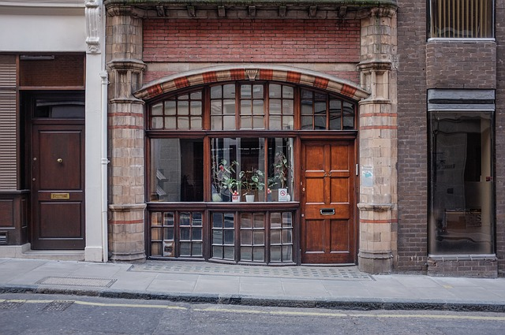
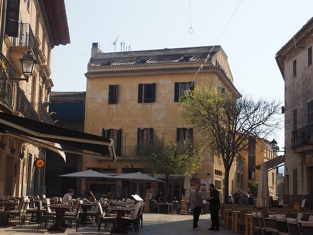
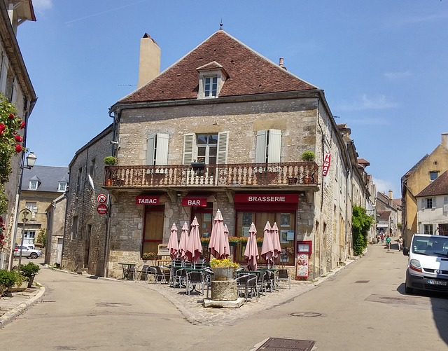

Coffee Shops
Drinking coffee is a favorite past time for any Parisian,
especially cafes that serve bread & delectable pastries! Also, what better places to sip cafe au lait
than great locations where you can people watch all day?

Cafe de Flore
Cafe de Flore is Ernest Hemingway's old haunt. Located in the picturesque St. Germain neighborhood, it is no wonder that Hemingway would love this spot. He would sit outside, people watch, eat, and drink coffee, all the while looking for inspiration for his next book. A surprising quirk is that there is a miniature diorama of the cafe upstairs! It is a bit touristy, but it is too hard to pass up visiting one of the favorite spots of our literary greats.

Fragments
Fragments cafe is a little off the beaten path. It is located on a quiet street with conspicuous, navy blue facade. You will never see the outside of the cafe without a rack of coloful bikes. Upon entering, it is a rustic paradise with wooden tables, chairs, and a small courtyard in the back.
